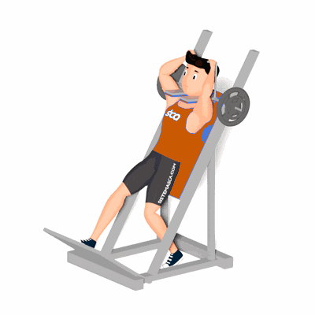

Afundo no Hack

O exercício trabalha o fortalecimento e hipertrofia dos músculos da coxa, com enfoque nos músculos reto femoral, vasto lateral e vasto medial. Realizada no equipamento Hack para auxiliar na execução correta dos movimentos, proporcionando segurança.
Ficha Técnica
Tipo: Musculação
Grupo Muscular: Perna
Aparelho: Nenhum
Músculos: Nenhum
Como realizar
- Posicione no aparelho, costas apoiadas no encosto e os ombros encaixados abaixo das almofadas;
- Um pé apoiado na plataforma do aparelho e outro apoiado no chão, em posição de afundo;
- Coluna reta e abdome contraído, segure os pegadores para auxílio na estabilidade;
- Destrave o aparelho e desça o corpo flexionando o joelho em um ângulo de 90 graus, até a coxa ficar em paralelo ao solo;
- Retorne à posição inicial e repita os movimentos, e em seguida troque a posição das pernas.
 RC STORE
RC STORE